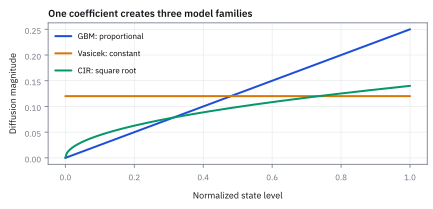
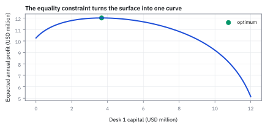
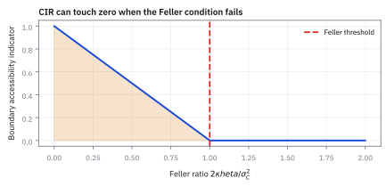
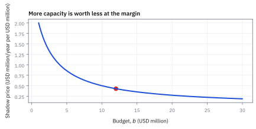

12.4 Lagrange Multipliers — Equality Constraints
เมื่อถูกบังคับให้อยู่บนเส้น ตัวคูณ Lagrange หาจุดที่ดีที่สุดบนเส้นนั้น และบอกในตัวว่าข้อบังคับมีราคาเท่าไรต่อหนึ่งหน่วย
หัวหน้าฝ่ายเทรดต้องแบ่งทุนความเสี่ยง \$12 ล้าน ให้สองเดสก์จนหมด แบบจำลองสมมติบอกว่าถ้าได้ทุน $x_1$ และ $x_2$ ล้าน เดสก์ 1 ทำกำไรคาดหวัง $2\ln(1+x_1)$ ล้าน USD ต่อปี เดสก์ 2 ทำได้ $4\ln(1+x_2)$ (ใช้ log เพราะยิ่งใส่เงินมาก ต้นทุนการเทรดยิ่งกินกำไรส่วนเพิ่ม) เดสก์ 2 เก่งกว่าสองเท่า จึงมีคนเสนอแบ่ง 4 : 8 ตามฝีมือ และบอกว่าถ้าได้ทุนเพิ่มอีก \$1 ล้าน กำไรจะเพิ่มตามราคาส่วนเพิ่มที่คำนวณได้พอดี สองข้อนี้ถูกไหม?
ลองตอบก่อนเปิดเฉลย
ผิดทั้งสองข้อ แต่ไม่มาก แบ่ง 4 : 8 ได้ \$12.0078 ล้านต่อปี คำตอบที่ดีที่สุดคือ 3.667 : 8.333 ได้ \$12.0153 ล้าน เดสก์ที่เก่งกว่าสองเท่าควรได้เงิน 2.27 เท่า ตัวคูณ Lagrange คือ $\nu=3/7\approx0.4286$ ต่อปี แปลว่าเงินก้อนเล็ก ๆ ถัดไปทำกำไร 42.86% ต่อปี แต่เพิ่มเต็ม \$1 ล้าน ได้จริง \$413,957 ไม่ใช่ \$428,571 เพราะราคาของเงินลดลงระหว่างที่เติม
สิ่งที่เราจะสร้าง
12.2 จัดการข้อบังคับลงเงินครบด้วยการสลับเงินระหว่างสองตัวจนความชันเท่ากัน 12.3 หาโดยแทนค่า ทั้งสองวิธีใช้ได้กับข้อบังคับง่าย ๆ หน้านี้ให้วิธีทั่วไปของ Lagrange ซึ่งใช้ได้กับข้อบังคับแบบสมการเรียบ ๆ ทุกแบบ และให้ของแถมที่มีค่าที่สุด คือราคาของข้อบังคับ
เราจะเริ่มจากภาพเรขาคณิตว่าทำไม gradient ของเป้าหมายต้องขนานกับ gradient ของข้อบังคับ สร้าง Lagrangian แก้โจทย์แบ่งทุน เทียบกับการเดา พิสูจน์ว่าตัวคูณคือราคาของเงินล้านถัดไป ทดสอบด้วยงบ \$13 ล้าน ตรวจอันดับสอง แล้วใช้วิธีเดียวกันกับพอร์ตความเสี่ยงต่ำสุด และจบที่จุดที่วิธีนี้พัง ซึ่งเปิดทางไป 12.6
ศัพท์ที่ใช้ในหัวข้อนี้
- Equality constraint
- ข้อบังคับที่ต้องเท่ากับค่าหนึ่งพอดี เช่นทุนต้องใช้ครบ \$12 ล้าน หรือน้ำหนักรวมต้องเป็น 1
- Lagrangian
- เป้าหมายที่หักข้อบังคับคูณตัวคูณออก ทำให้โจทย์มีข้อบังคับกลายเป็นการหาจุดที่ความชันเป็นศูนย์ธรรมดา
- Lagrange multiplier
- ตัวคูณของข้อบังคับ ที่จุดคำตอบมันบอกว่าเป้าหมายเปลี่ยนเท่าไรเมื่อผ่อนข้อบังคับหนึ่งหน่วย
- Shadow price (ราคาเงา)
- ชื่อทางเศรษฐศาสตร์ของตัวคูณ คือมูลค่าของทรัพยากรหน่วยถัดไป ใช้ตัดสินว่าควรจ่ายเพื่อได้ทรัพยากรเพิ่มหรือไม่
- Envelope theorem
- ผลที่ว่าอัตราเปลี่ยนของค่าที่ดีที่สุดเทียบงบ เท่ากับตัวคูณ ใช้พิสูจน์ความหมายของราคาเงา
- Diminishing returns
- ทุนเพิ่มแต่กำไรส่วนเพิ่มลดลง ทำให้คำตอบไม่ใช่ทุ่มทั้งหมดให้คนเก่งที่สุด
สัญลักษณ์และหน่วย
| สัญลักษณ์ | ความหมาย | หน่วย |
|---|---|---|
| $x_1,\ x_2,\ b$ | ทุนของเดสก์ 1, เดสก์ 2 และงบรวม นับเป็นล้าน USD จึงเข้า log ได้ | ล้าน USD |
| $F(x),\ F^\star(b)$ | กำไรคาดหวังรวม และกำไรที่ดีที่สุดเมื่องบเป็น $b$ | ล้าน USD ต่อปี |
| $g(x)$ | ทุนที่ใช้รวม $x_1+x_2$ | ล้าน USD |
| $\nu$ | ตัวคูณของงบทุน | ล้าน USD ต่อปี ต่อทุน \$1 ล้าน = ต่อปี |
| $\mathcal L$ | Lagrangian | ล้าน USD ต่อปี |
| $d$ | ทิศที่เดินได้โดยยังอยู่บนข้อบังคับ | ล้าน USD |
| $V,\ \lambda$ | covariance ของ 12.1 และตัวคูณของงบน้ำหนักในโจทย์พอร์ต | return² ต่อปี, variance ต่อหน่วยงบ |
ขั้นที่ 1 — ทำไม gradient ของเป้าหมายต้องขนานกับ gradient ของข้อบังคับ
บนเส้นงบ $g(x)=b$ เราเดินได้เฉพาะทิศที่ไม่ทำให้หลุดเส้น คำถามคือที่จุดดีที่สุด เป้าหมาย $f$ ต้องมีหน้าตาอย่างไรในทิศเหล่านั้น ใช้การประมาณเส้นตรงของ 12.2 กับทั้ง $g$ และ $f$
ทิศที่อยู่บนเส้นได้คือทิศที่ตั้งฉากกับ $\nabla g$ ถ้าในทิศเหล่านั้น $\nabla f^{\mathsf T}d\ne0$ เดินทาง $+d$ หรือ $-d$ ทางใดทางหนึ่งจะได้ $f$ สูงขึ้นโดยไม่หลุดเส้น จุดนั้นจึงไม่ใช่คำตอบ ที่คำตอบ $\nabla f$ ต้องตั้งฉากกับทุกทิศบนเส้นด้วย
ในสองมิติ ทิศที่ตั้งฉากกับเส้นเดียวกันมีแนวเดียว $\nabla f$ จึงต้องขนานกับ $\nabla g$ ต่างกันแค่ตัวคูณ $\nu$ (ต้องมี $\nabla g\ne0$) ในโจทย์แบ่งทุน $\nabla g=(1, 1)$ และทิศบนเส้นคือ $d=(1, -1)$ ย้ายเงินจากเดสก์ 2 ไปเดสก์ 1 เงื่อนไขจึงแปลว่ากำไรส่วนเพิ่มของสองเดสก์ต้องเท่ากัน กฎเดียวกับ marginal variance เท่ากันใน 12.2
ขั้นที่ 2 — Lagrangian: เอาข้อบังคับใส่เข้าไปในเป้าหมาย
แทนที่จะจำเงื่อนไขขนานกัน Lagrange เขียนฟังก์ชันใหม่หนึ่งตัวที่ความชันเป็นศูนย์แล้วได้ทุกเงื่อนไขพร้อมกัน บรรทัดแรกเป็นนิยาม
สองบรรทัดกลางคือ $\nabla F=\nu\nabla g$ ของขั้นที่ 1 เพราะ $\nabla g=(1, 1)$ บรรทัดสุดท้ายคือของแถม: derivative เทียบ $\nu$ คืนข้อบังคับเดิมกลับมา ได้สามสมการ สามตัวที่ไม่รู้ ($x_1, x_2, \nu$) พอดี และบนเส้นงบวงเล็บเป็นศูนย์ $\mathcal L$ จึงเท่ากับ $F$ ทุกประการ เราไม่ได้เปลี่ยนโจทย์
ลบหรือบวกเป็นธรรมเนียม ถ้าบวก $\nu$ จะกลับเครื่องหมายแต่ $x$ เหมือนเดิม เลือกลบเพื่อให้ $\nu$ เป็นบวกเมื่อทุนเพิ่มแล้วดีขึ้น ตรงกับความหมายของราคา
ขั้นที่ 3 — แก้ระบบด้วยตัวอักษร: ทุกอย่างเขียนเป็น ν ได้
ถ้าแก้หา $x$ ตรง ๆ จะติดเพราะมี $\nu$ ที่ไม่รู้ค่า เคล็ดคือเขียนทุนของทุกเดสก์เป็นฟังก์ชันของ $\nu$ ก่อน แล้วให้ข้อบังคับเป็นตัวหา $\nu$
derivative ของ $2\ln(1+x_1)$ คือ $2/(1+x_1)$ ตาม chain rule จากนั้นย้ายข้าง หารสองบรรทัดแรกกันได้ $(1+x_2)/(1+x_1)=4/2=2$ ไม่ว่างบเท่าไร ฝีมือล็อกสัดส่วน งบกำหนดแค่ระดับ
บรรทัดสุดท้ายบอกว่าราคาของเงินลดลงเมื่องบโต ยิ่งมีเงินมาก เงินก้อนถัดไปยิ่งมีค่าน้อย ตรงกับ diminishing returns
Figure 12.4a — กำไรของแต่ละเดสก์โตช้าลงเมื่อทุนโต

ขั้นที่ 4 — งบ \$12 ล้าน: แบ่ง 3.667 กับ 8.333
โจทย์ให้อะไรมาบ้าง: $b=12$ แทนลงสูตรของขั้นที่ 3 แล้วคำนวณกำไร ใช้ $28/3=2\times14/3$ ทำให้ $\ln(28/3)=\ln2+\ln(14/3)$
คำตอบ: เดสก์ 1 ได้ \$3.667 ล้าน เดสก์ 2 ได้ \$8.333 ล้าน กำไรคาดหวัง \$12.0153 ล้านต่อปี เทียบการเดา: แบ่งครึ่ง $6\ln7=11.6755$ แบ่งตามฝีมือ $2\ln5+4\ln9=12.0078$ ทุ่มให้เดสก์ 2 ทั้งหมด $4\ln13=10.2598$ แบ่งตามฝีมือเกือบชนะ เพราะยอดของปัญหาแบบนี้แบนใกล้จุดสูงสุด
ตรวจเองใน 10 วินาที: $11/3+25/3=36/3=12$ ใช้ครบ และกำไรส่วนเพิ่ม $2/(14/3)=6/14$ กับ $4/(28/3)=12/28$ เท่ากันที่ 3/7 ทำไม 2.27 เท่าไม่ใช่ 2 เท่า? ทุนบวกหนึ่งเป็นสองเท่าพอดี (28/3 กับ 14/3) แต่พอลบ 1 ออกจากทั้งคู่ ตัวที่เล็กกว่าถูกลบแรงกว่าเชิงสัดส่วน
Figure 12.4b — บนเส้นงบ \$12 ล้าน เหลือเส้นโค้งเส้นเดียว

Figure 12.4c — ที่คำตอบ กำไรส่วนเพิ่มของทุกเดสก์เท่ากับราคาเงา

ขั้นที่ 5 — ν คือราคาของเงินก้อนถัดไป (envelope theorem)
ถ้าเพิ่มงบ $b$ นิดหนึ่ง คำตอบ $x^\star(b)$ ขยับตาม และกำไรที่ดีที่สุด $F^\star(b)$ ก็ขยับ หาอัตราเปลี่ยนด้วย chain rule แล้วแทนเงื่อนไขของขั้นที่ 1
บรรทัดที่สามแทน $\nabla F=\nu\nabla g$ บรรทัดสุดท้ายใช้ว่าคำตอบอยู่บนเส้นงบทุกค่า $b$ คือ $x_1^\star+x_2^\star=b$ derivative ของมันเทียบ $b$ จึงเป็น 1 พอดี ตัวคูณจึงไม่ใช่ตัวช่วยคำนวณ มันคืออัตราเปลี่ยนของกำไรที่ดีที่สุดต่องบ
หน่วยของ $\nu$ คือล้าน USD ต่อปี ต่อทุน \$1 ล้าน จึงเป็นอัตราต่อปี: 42.86% ถ้ากู้ทุนเพิ่มได้ที่ดอกเบี้ยต่ำกว่านี้ก็คุ้ม อย่าสับสนกับผลตอบแทนเฉลี่ย $12.0153/12=100.13\%$ ซึ่งเป็นของเงินทั้งก้อน ไม่ใช่ของเงินก้อนถัดไป
ขั้นที่ 6 — ทดสอบด้วยงบ \$13 ล้าน: ν ทำนายสูงไป 3.53%
ตัวเลขที่เอาไปขอวงเงินต้องตรวจได้ แก้โจทย์ใหม่ที่ $b=13$ แล้วเทียบกับที่ $\nu$ ทำนาย จากนั้นเขียน $F^\star(b)$ เป็นสูตรปิดเพื่อดูว่าช่องว่างมาจากไหน
$\nu=0.428571$ ทำนายกำไรเพิ่ม \$428,571 ได้จริง \$413,957 สูงไป 3.53% เพราะ $\nu$ เองตกจาก 0.4286 เหลือ 0.4 ระหว่างที่เติมเงิน สูตรปิดยืนยัน: derivative ของ $F^\star$ คือ $6/(b+2)$ ซึ่งเท่ากับ $\nu$ ทุกค่าของ $b$ และผลต่างจริงคือ $6\ln(15/14)=0.413957$ ทุกหลัก
เติมพจน์ความโค้งแบบ Taylor อันดับสอง: $0.428571+\tfrac12(-6/196)=0.413265$ คลาดจากของจริง 0.000692 หรือ 0.17% ส่วนเงินล้านใหม่ควรแบ่ง $(4-11/3, 9-25/3)=(1/3, 2/3)$ คือ 1 : 2 ตามฝีมือพอดี ถ้ายัดให้เดสก์ 2 ทั้งล้าน ได้ 12.422390 เสีย \$6,826 ต่อปีฟรี ๆ
| งบ $b$ | $F^\star(b)$ | เพิ่มจาก $b=12$ | เพิ่มต่องบที่เพิ่ม |
|---|---|---|---|
| 12.01 | 12.019543 | 0.004284 | 0.428418 |
| 12.10 | 12.057964 | 0.042705 | 0.427048 |
| 12.50 | 12.225807 | 0.210548 | 0.421096 |
| 13.00 | 12.429216 | 0.413957 | 0.413957 |
| 14.00 | 12.816447 | 0.801188 | 0.400594 |
ยิ่งขยับงบน้อย อัตราเพิ่มยิ่งเข้าใกล้ $\nu=0.428571$ ที่ 0.01 คลาดแค่ 0.04% นี่คือนิยามของ derivative ทำงานต่อหน้า ขอวงเงินเพิ่มเล็กน้อยใช้ $\nu$ ได้เลย ขอก้อนใหญ่ต้องแก้โจทย์ใหม่
Figure 12.4d — ราคาเงาลดลงเมื่องบโต

ขั้นที่ 7 — ตรวจอันดับสอง: ทำไมเป็นยอดสูงสุดของทั้งเส้น
เงื่อนไขอันดับหนึ่งให้ผู้สมัคร ต้องตรวจความโค้งตาม 12.3 แต่บนข้อบังคับ ทิศที่สำคัญคือทิศที่เดินได้ $d=(1, -1)$ เท่านั้น
ช่องนอกทแยงเป็นศูนย์เพราะสองเดสก์ไม่กวนกัน ทแยงติดลบทุกจุดที่ทุนมากกว่า −1 กำไรรวมจึงโค้งคว่ำทุกทิศทุกที่ และเส้นงบเป็นเส้นตรงซึ่ง convex ตามขั้นที่ 6 ของ 12.1 (ฉบับกลับหัว) จุดที่ได้จึงเป็นยอดสูงสุดของทั้งเส้น ไม่ใช่แค่ยอดเนินเฉพาะถิ่น
ขั้นที่ 8 — วิธีเดียวกันกับพอร์ต: พอร์ตความเสี่ยงต่ำสุดและราคาของงบ
โจทย์ให้อะไรมาบ้าง: หาน้ำหนักหุ้นกับพันธบัตรที่ variance ต่ำสุดเมื่อลงเงินครบ ด้วย $V$ ของ 12.1 ข้อบังคับคือ $x_1+x_2=1$ inverse ของ 2×2 คือสลับทแยง เปลี่ยนเครื่องหมายนอกทแยง แล้วหารด้วย determinant 0.000364 (7.5)
คำตอบ: หุ้น 10.53% พันธบัตร 89.47% เป็นวิธีที่สามที่ได้ 2/19 (12.1 แทนค่า 12.2 สลับเงิน) บรรทัดที่สองอ่านได้ว่า marginal variance $2Vx$ ของทุกตัวเท่ากับ $\lambda$ ตัวเดียว คือค่าร่วม 0.019158 ของ 12.2 ข้อบังคับข้อที่สามหา $\lambda$: ใส่ $x$ ลงใน $x_1+x_2=1$ ได้ $\tfrac\lambda2\,\mathbf1^{\mathsf T}V^{-1}\mathbf1=1$
ตรวจเองใน 10 วินาที: ความหมายของราคา: ถ้าลงเงิน $b$ แทน 1 ด้วยส่วนผสมเดิม variance คูณ $b^2$ จึง $q^\star(b)=b^2/104.3956$ และ $dq^\star/db$ ที่ $b=1$ คือ $2/104.3956=\lambda$ ตรงกับขั้นที่ 5 ลงเงินเพิ่ม 1% ของ NAV ตามส่วนผสมนี้ variance ขึ้นราว 0.000192
ขั้นที่ 9 — ทำให้มันพัง: งบ \$0.5 ล้าน ให้ทุนติดลบ
สูตร $\nu=6/(b+2)$ ดูใช้ได้กับทุกงบ ลองงบเล็ก ๆ $b=0.5$
Lagrange สั่งให้เดสก์ 1 คืนทุน \$166,667 ที่มันไม่มี คำตอบนั้นให้ $F=1.678659$ สูงกว่า แต่ทำไม่ได้ วิธีนี้รู้จักแค่ข้อบังคับแบบสมการ ไม่รู้ว่าทุนต้องไม่ติดลบ คำตอบจริงคือให้เดสก์ 2 ทั้ง \$0.5 ล้าน ที่นั่นกำไรส่วนเพิ่มไม่เท่ากัน: เดสก์ 1 ยังได้แค่ 2 ขณะที่เดสก์ 2 ได้ 2.667 เราอยากย้ายเงินจากเดสก์ 1 ต่อแต่ย้ายไม่ได้แล้ว
เส้นแบ่งคือ $x_1=(b-1)/3=0$ ที่งบ \$1 ล้าน ต่ำกว่านั้นกฎ “กำไรส่วนเพิ่มเท่ากัน” ใช้ไม่ได้ ต้องมีเงื่อนไขเรื่องเครื่องหมายเพิ่ม ซึ่งคือ KKT ใน 12.6
คำถามที่ควรถามออกมาดัง ๆ
ถ้าข้อบังคับเป็นเส้นตรงแบบนี้ ทำไมไม่แทนค่าไปเลย? ได้ และ 12.1 ก็ทำ แต่พอมีหลายสินทรัพย์และหลายข้อบังคับ การแทนค่ายุ่งขึ้นเร็วมาก ส่วน Lagrange เพิ่มแค่ตัวคูณหนึ่งตัวต่อหนึ่งข้อบังคับ และได้ราคาของข้อบังคับมาฟรี ซึ่งการแทนค่าไม่ให้
ν กับตัวแปร dual ของ 11.3 เป็นเรื่องเดียวกันไหม? ใช่ ในโจทย์เส้นตรงมันคือตัวแปร dual ในโจทย์โค้งมันคือตัวคูณ Lagrange และใน 12.6 จะกลายเป็นตัวคูณของ KKT ทั้งหมดคือราคาของการผ่อนข้อบังคับหนึ่งหน่วย
กับดัก: เอาราคาเงาไปคูณก้อนใหญ่ และอ่านหน่วยผิด
$\nu$ เป็นความชันที่จุดเดียว ถ้าขอเพิ่มทีเดียว \$5 ล้าน แล้วคูณ $5\nu$ จะได้ \$2.1429 ล้าน แต่ของจริงคือ $6\ln(19/14)=1.832290$ ล้าน สูงเกิน 16.9% เฉลี่ยแค่ \$366,458 ต่อล้าน การคูณราคาเงาเข้ากับก้อนใหญ่คือวิธีสร้างตัวเลขเกินจริงที่พบบ่อยที่สุดในเอกสารขอวงเงิน
หน่วยของ $\nu=0.4286$ คือล้าน USD ต่อปีต่อทุนล้าน USD อ่านเป็น “\$0.43” จะพลาดไปล้านเท่า อีกจุดที่ติดบ่อยคือได้ $x_1=2/\nu-1$ แล้วหยุด เพราะยังมี $\nu$ ที่ไม่รู้ค่า ทางออกคือสมการที่ derivative เทียบ $\nu$ ซึ่งคือข้อบังคับที่กลับมา และสุดท้าย ต้องตรวจเสมอว่าคำตอบไม่ละเมิดข้อบังคับที่ไม่ได้ใส่ เช่นทุนติดลบในขั้นที่ 9
ใช้ทำอะไรบนโต๊ะจริง
การแบ่งทุนความเสี่ยงของทั้งบริษัทมีโครงแบบนี้: ผลลัพธ์ไม่ใช่แค่ตัวเลขทุนของแต่ละเดสก์ แต่คืออัตรา $\nu$ ที่ทุกเดสก์ต้องทำได้เกิน เดสก์ไหนกำไรส่วนเพิ่มต่ำกว่า 42.86% ต่อปีควรถูกดึงเงินไปให้เดสก์ที่ยังทำได้สูงกว่า และ $\nu$ คือเพดานดอกเบี้ยที่ยอมจ่ายเพื่อได้ทุนเพิ่ม
ในโจทย์พอร์ต ตัวคูณของงบน้ำหนักบอกว่าการลงเงินเพิ่มเพิ่ม variance เท่าไร ตัวคูณของข้อบังคับอื่น เช่นผลตอบแทนเป้าหมายใน 12.5 บอกว่าการขอผลตอบแทนเพิ่ม 1 จุดต้องแลกด้วยความเสี่ยงเท่าไร ตัวเลข 3.667 : 8.333 ในหน้านี้มาจากแบบจำลองสมมติ ควรอ่านเป็นทิศทาง ไม่ใช่คำสั่งโอนเงิน
สามโจทย์ตรวจความเข้าใจ
1. เพิ่มเดสก์ที่ 3 กำไร $3\ln(1+x_3)$ งบยังเป็น \$12 ล้าน ควรแบ่งอย่างไร?
เฉลย
เงื่อนไขเดิม $s_i/(1+x_i)=\nu$ ให้ $x_i=s_i/\nu-1$ รวมได้ $(2+4+3)/\nu-3=12$ จึง $\nu=9/15=0.6$ ทุนคือ $2/0.6-1=2.333$, $4/0.6-1=5.667$ และ $3/0.6-1=4$ รวม 12 กำไร $2\ln(10/3)+4\ln(20/3)+3\ln5\approx14.8247$ ราคาเงาสูงขึ้นจาก 0.4286 เป็น 0.6 เพราะมีที่ลงเงินดี ๆ มากขึ้น เงินจึงมีค่ามากขึ้น
2. ถ้ากู้ทุนเพิ่มได้ไม่จำกัดที่ต้นทุน 30% ต่อปี ควรกู้เท่าไร และได้กำไรสุทธิเพิ่มเท่าไร?
เฉลย
กู้จนราคาเงาเท่าต้นทุน: $6/(b+2)=0.30$ ได้ $b=18$ คือกู้ \$6 ล้าน กำไรเพิ่ม $F^\star(18)-F^\star(12)=6\ln(20/14)\approx2.140050$ หักดอกเบี้ย $0.30\times6=1.8$ เหลือ \$340,050 ต่อปี ถ้ากู้เกิน 18 ล้าน เงินล้านถัดไปทำกำไรต่ำกว่า 30% ไม่คุ้ม
3. ถ้า correlation หุ้นกับพันธบัตรเป็น 0.8 ใช้วิธีของขั้นที่ 8 หาพอร์ตความเสี่ยงต่ำสุดและ $\lambda$
เฉลย
$V_{12}=0.016$ determinant $0.0004-0.000256=0.000144$ $V^{-1}\mathbf1=(0.01-0.016,\ 0.04-0.016)/0.000144=(-41.667, 166.667)$ รวม 125 จึง $x=(-1/3, 4/3)$ variance $1/125=0.008$ และ $\lambda=2/125=0.016$ ตรงกับโจทย์ข้อ 2 ของ 12.1 ที่ได้จากการแทนค่า
คำนวณซ้ำด้วย JavaScript
รันใน Node.js ได้โดยไม่ติดตั้งแพ็กเกจ โค้ดแบ่งทุนด้วยเงื่อนไข Lagrange สำหรับกี่เดสก์ก็ได้ รายงานว่าคำตอบทำได้จริงไหม (ทุนไม่ติดลบ) ทดสอบราคาเงาด้วยงบใหม่ หาพอร์ตความเสี่ยงต่ำสุดพร้อม $\lambda$ และปฏิเสธ input ที่ใช้ไม่ได้ เช่นฝีมือไม่บวก งบติดลบ หรือ covariance ที่ไม่ PD แล้วพิมพ์ผลเป็น JSON บรรทัดเดียว
function checkSkills(skills) {
if (!Array.isArray(skills) || skills.length === 0 || !skills.every(s => Number.isFinite(s) && s > 0)) {
throw new RangeError('Skills must be positive finite numbers');
}
}
// Expected annual profit (USD million) of desks with profit s_i ln(1 + x_i), x_i in USD million.
function profit(skills, x) {
checkSkills(skills);
if (!Array.isArray(x) || x.length !== skills.length || !x.every(Number.isFinite)) throw new TypeError('Need one finite allocation per desk');
if (x.some(v => v <= -1)) throw new RangeError('Allocation at or below -1: log profit undefined');
return skills.reduce((s, k, i) => s + k * Math.log(1 + x[i]), 0);
}
// Lagrange: s_i / (1 + x_i) = nu for every desk and sum x_i = b.
function allocate(skills, b) {
checkSkills(skills);
if (!Number.isFinite(b) || b < 0) throw new RangeError('Budget must be a finite number >= 0');
const total = skills.reduce((s, k) => s + k, 0), nu = total / (b + skills.length);
const x = skills.map(k => k / nu - 1);
return {nu, x, feasible: x.every(v => v >= 0), value: profit(skills, x), marginals: skills.map((k, i) => k / (1 + x[i]))};
}
// Minimum variance with weights summing to one: 2Vx = lambda 1.
function minVarianceLagrange(V) {
if (!Array.isArray(V) || V.length !== 2 || V.some(r => !Array.isArray(r) || r.length !== 2 || !r.every(Number.isFinite))) {
throw new TypeError('Need a finite 2 by 2 covariance');
}
if (V[0][1] !== V[1][0]) throw new RangeError('Covariance must be symmetric');
const det = V[0][0] * V[1][1] - V[0][1] * V[1][0];
if (!(det > 0 && V[0][0] > 0)) throw new RangeError('Covariance must be positive definite');
const Vinv1 = [(V[1][1] - V[0][1]) / det, (V[0][0] - V[1][0]) / det], total = Vinv1[0] + Vinv1[1];
return {det, Vinv1, total, x: Vinv1.map(v => v / total), lambda: 2 / total, variance: 1 / total};
}
const skills = [2, 4];
const best = allocate(skills, 12), next = allocate(skills, 13);
const Fstar = b => allocate(skills, b).value;
const gain = next.value - best.value;
const H = best.x.map((v, i) => -skills[i] / (1 + v) ** 2); // diagonal Hessian of profit
const small = allocate(skills, 0.5);
console.log(JSON.stringify({
best, guesses: {half: profit(skills, [6, 6]), bySkill: profit(skills, [4, 8]), allToDesk2: profit(skills, [0, 12])},
ratio: best.x[1] / best.x[0], averageReturn: best.value / 12,
next, gain, overPrediction: best.nu / gain - 1, taylor: best.nu - 0.5 * 6 / 14 ** 2,
table: [12.01, 12.1, 12.5, 13, 14].map(b => [b, Fstar(b), Fstar(b) - best.value, (Fstar(b) - best.value) / (b - 12)]),
closedForm: 6 * Math.log(15 / 14), naiveNext: profit(skills, [best.x[0], best.x[1] + 1]),
plusFive: {actual: Fstar(17) - best.value, byNu: 5 * best.nu, perMillion: (Fstar(17) - best.value) / 5},
hessian: {diagonal: H, alongBudget: H[0] + H[1]},
portfolio: minVarianceLagrange([[0.04, 0.006], [0.006, 0.01]]),
tooSmall: {...small, corner: profit(skills, [0, 0.5]), cornerMarginals: [2 / 1, 4 / 1.5]},
exercises: {threeDesks: allocate([2, 4, 3], 12), borrowTo: 6 / 0.30 - 2, borrowNet: Fstar(18) - best.value - 0.30 * 6,
rho08: minVarianceLagrange([[0.04, 0.016], [0.016, 0.01]])}
}));ที่มาที่ไป
Joseph-Louis Lagrange ตีพิมพ์วิธีนี้ใน Mécanique analytique ปี 1788 เพื่อหาการเคลื่อนที่ของวัตถุที่ถูกบังคับ เช่นลูกปัดบนลวด ตัวคูณในงานของเขาทำหน้าที่เหมือนแรงที่ลวดดันลูกปัดไว้ นักเศรษฐศาสตร์กลางศตวรรษที่ 20 เช่น Paul Samuelson อ่านตัวคูณเดียวกันใหม่เป็นราคาเงาของทรัพยากร ซึ่งคือความหมายที่หน้านี้ใช้
ข้อจำกัด: หน้านี้สมมติอะไร และของจริงเป็นอย่างไร
| เรื่อง | หน้านี้สมมติว่า | ของจริง | ผลเวลาใช้งาน |
|---|---|---|---|
| ชนิดข้อบังคับ | เป็นสมการทั้งหมด | ส่วนใหญ่เป็นอสมการ เช่นห้ามติดลบ ห้าม short | คำตอบอาจติดลบแบบขั้นที่ 9 ต้องใช้ KKT (12.6) |
| ราคาเงา | ใช้กับการผ่อนเล็ก ๆ | คนมักเอาไปคูณก้อนใหญ่ | +\$5 ล้าน เกินจริง 16.9% ต้องแก้โจทย์ใหม่ |
| รูปของกำไร | $s\ln(1+x)$ รู้แน่นอน | capacity ของกลยุทธ์ประมาณได้หยาบ (18.7) | ตัวเลขแบ่งทุนเป็นทิศทาง ไม่ใช่คำสั่งเป๊ะ |
| ความเป็นอิสระ | เดสก์ไม่กวนกัน (ช่องไขว้ศูนย์) | เดสก์ที่เทรดของคล้ายกันแย่งสภาพคล่องกัน | ต้องใส่พจน์ไขว้ และตรวจอันดับสองใหม่ |
สิ่งที่ควรตอบได้หลังอ่าน
- ที่จุดดีที่สุดบนข้อบังคับ $\nabla f=\nu\nabla g$ เพราะทุกทิศที่เดินได้ต้องไม่เพิ่มเป้าหมาย ในภาษาโต๊ะคือกำไรส่วนเพิ่มเท่ากันทุกที่ที่ลงเงิน
- Lagrangian $F-\nu(g-b)$ ให้ทุกเงื่อนไขพร้อมกัน รวมถึงข้อบังคับเดิมจาก derivative เทียบ $\nu$
- ทุน \$12 ล้าน แบ่ง 3.667 : 8.333 ได้ \$12.0153 ล้านต่อปี และ $\nu=6/(b+2)=3/7$ คืออัตราเปลี่ยนของกำไรที่ดีที่สุดต่องบ
- ราคาเงาเป็นความชันที่จุดเดียว: +\$1 ล้าน ได้จริง \$413,957 ไม่ใช่ \$428,571 และ +\$5 ล้าน เกินจริง 16.9%
- พอร์ตความเสี่ยงต่ำสุดได้ $\lambda=0.019158$ คือ marginal variance ร่วมของ 12.2 และวิธีสมการล้วนพังเมื่ออสมการเริ่มบังคับ
12.5 จะใส่ข้อบังคับสองข้อพร้อมกัน คือลงเงินครบและได้ผลตอบแทนเป้าหมาย แล้วตัวคูณสองตัวจะวาด efficient frontier ออกมาทั้งเส้น